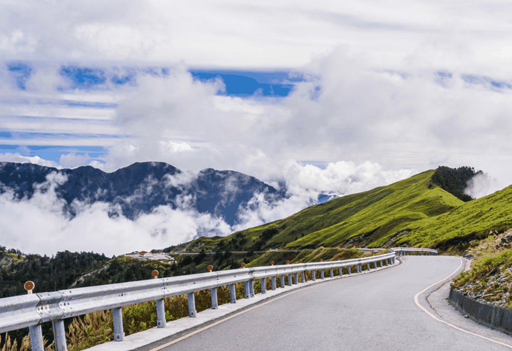

✨ 請提供登山口、集合時間與預估下山時間
請提供登山口、集合時間與預估下山時間
司馬庫斯、合歡山、武陵農場、雪山登山口、百岳路線。
支援早鳥與深夜出發，山友睡眼惺忪沒關係，司機清醒比較重要。
登山包、登山杖、睡袋與補給品請先告知數量。
百岳、縱走、登山口接駁最重要的是時間、路況與回程彈性。玹翔旅遊協助安排登山口接送、行李裝載與回程集合，讓你把體力留給山，把焦慮丟給專業流程。
請提供登山口、集合時間與預估下山時間
夜間或清晨出發請提前預約
山區天候與道路狀況可能影響行程

若需指定車型、特殊時間、行李較多或臨時多點停靠，請先與客服確認。價錢不是拿來比心酸，是讓你覺得整趟安排值得。